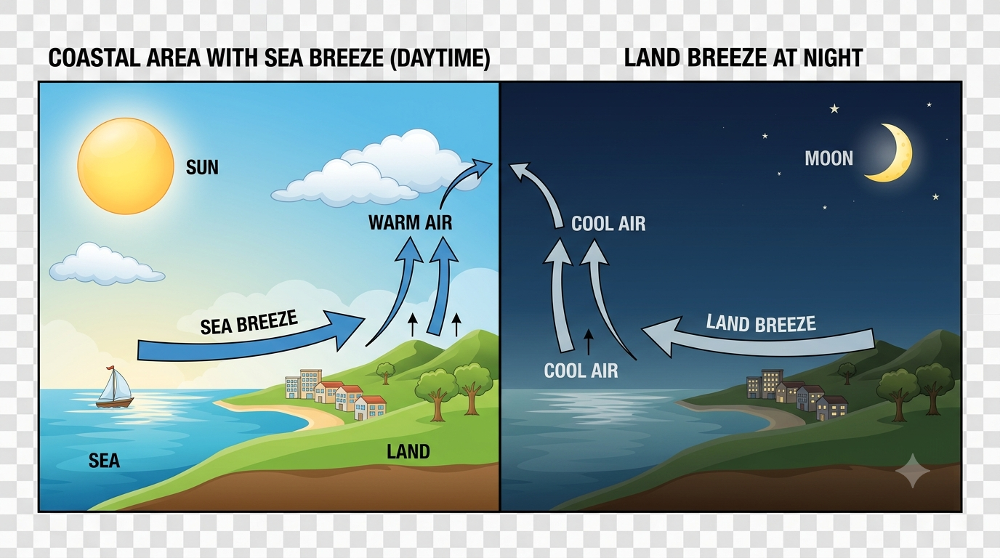

Weather and Climate
Test your understanding with competency-based questions that move from simple differences to real-life climate decisions.
Grade 5
Social Studies
Weather and Climate
10 Questions
One retry is allowed after the first wrong answer. After the second wrong answer, the correct answer and a brief explanation appear.
